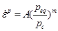

Cam clay creep is a special version of Camclay, where the stress level does not have to be at the plasticity curve to cause plastic strain, and deformation is occurring if the stress level is in proximity of the “reference” plasticity curve. The creep rate (both volumetric and shear) is derived by drawing a Camclay curve through the actual position in p’-q space, which results in an equivalent isotropic stress pressure peq (crossing of the curve at q=0 at the compressive side). The ratio of the equivalent peq to the “state parameter” pc gives the creep rate, where unity is usually based on laboratory test rates, that for creep tests are in the order of 1 x10-8 per second (1 promille per day).
The power m is usually a high number ranging from 30 for weak chalks to 100 for cemented sandstones.

The creep rate coefficient is a number that could be taken from relevant lab measurements that take hours to weeks in a creep experiment, so would typically be something like 0.001/day (or 10-8/s).
Example: for isotropic stresses, with peq=0.8pc and m=50, a creep rate which might be 10-6 /s under fast “plastic” lab conditions (peq=pc) would reduce to 45x10-3 /yr or 4.5% per century, reduced by the hardening (increase of pc with creep strain). For m=100, the creep would be 0.6% per million years, impossible to measure on operational or human time scales (10-100 years)
Creep can cause a natural overconsolidation of a rock, i.e. a human time scale resistance to pore collapse, based on creep over millions of years at (more or less) the same effective stresses in the field. Very low powers (assuming the power law relation holds for many orders of magnitude of time) would result in a full or very high creep closure of pores, similar to the compaction of salt in geological time, removing all tendency for pore collapse on shorter time scales.